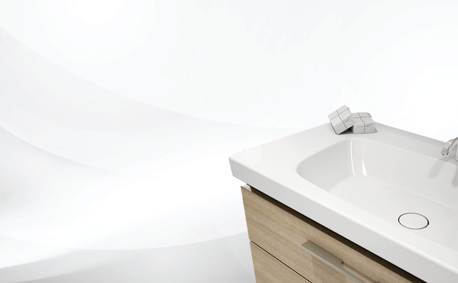

3D-Badplanung
Sie sehen Ihr neues Bad, bevor die erste Fliese fällt – Aufteilung, Möbel und Oberflächen dreidimensional dargestellt.
Start / Bad
Wellness in den eigenen vier Wänden – von der 3D-Badplanung über die staubfreie Sanierung bis zum perlweichen Wasser.
Wasserschaden, Heizungsausfall oder verstopfter Abfluss? Wir stehen Ihnen zur Seite.
Geschäftszeiten 02959 2240 · außerhalb 0664 523 40 73
So planen wir Ihr Bad
Sie sehen Ihr neues Bad, bevor die erste Fliese fällt – Aufteilung, Möbel und Oberflächen dreidimensional dargestellt.
Unsere Spezial-Staubsauganlage hält den Staub dort, wo er entsteht. Der Rest der Wohnung bleibt bewohnbar.
Armaturen, Fliesen und Möbel im Original ansehen und angreifen – bei uns im Haus in Sitzendorf.
Was kostet mein Traumbad?
Neubau, Sanierung oder Teilsanierung? Luxusoase oder kleines Budget? Sagen Sie uns Ihre geplante Investitionssumme – wir zeigen Ihnen, was Sie dafür bekommen.
Statt einer groben Schätzung im Netz bekommen Sie von uns eine konkrete Aufstellung für Ihr Bad, Ihre Quadratmeter und Ihre Wünsche.

Reinstes Vergnügen
Damit Sie lange Freude an Ihrem neuen Bad haben, geben wir Ihnen hilfreiche Tipps und Tricks mit – von der richtigen Reinigungsempfehlung bis zur Pflege der Armaturen.
Die Pflegehinweise bekommen Sie bei der Übergabe Ihres Bades, auf Wunsch schicken wir sie Ihnen auch per E-Mail.
Perlweiches Wasser
Die Weichwasseranlage AQA perla von BWT nimmt den Kalk aus dem Wasser, damit Ihre Dusche sauber bleibt.
Außerdem genießen Sie das unvergleichliche Gefühl von seidenweichem Perlwasser – für spürbar zarte Haut, geschmeidiges, glänzendes Haar und kuschelweiche Wäsche.
Haben Sie gewusst